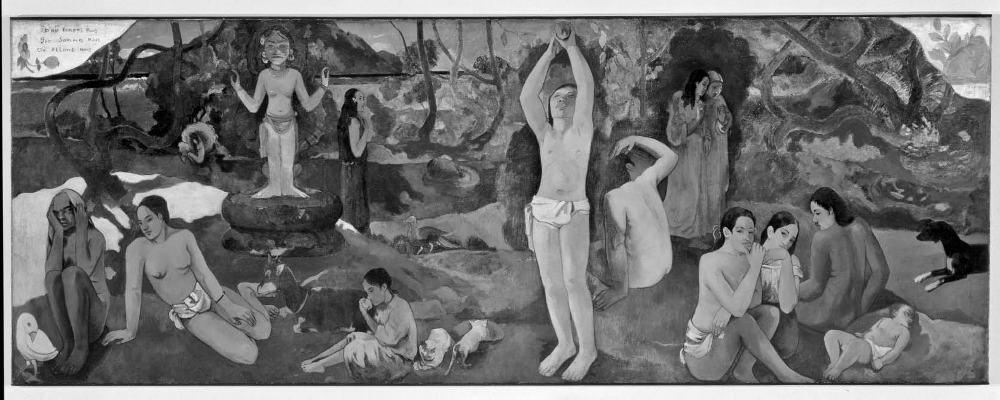

Hayatın anlamının peşinde
Bu soruya verilen cevaplarda bir eksiğimiz yok. Haz, mutluluk, gönül ferahlığı, sevme, sevilme, bir işle meşgul olma, bilgi, güç, başarı, hayır işleme, Tanrı’yı bilme, bilgelik, üreme ve aptalca sorular sormama, bunlardan sadece birkaçıdır.
İnsanların hayatın anlamına ilişkin arayışlarını ikiye ayırabiliriz. Bu yönlerden biri hayatın ötesine uzanır. Buna göre bakışımızı bir başka dünyaya yöneltmeli, umutlarımızı bir başka dünyaya bağlamalıyız. Bu öte dünya mevcut yaşamımızın karışıklığından ve kederlerinden uzak başka bir varolma biçimidir. Orada bu dünyanın baş döndürücü hareketliliğinden ve çılgın olaylarından eser yoktur. Bu evren içindeki önemsizliğimizi, daha geniş bir şema içinde her şeyin anlamlı olduğuna dair bir güvenceyle telafi edebiliriz. Öte dünya umudun dünyasıdır. Bu resimde anlamın kaynağı sınırlı yaşamlarımızın ve sınırlı görüşlerimizin sıradan dünyasını aşan bir yerdedir. Edebiyat, sanat, müzik ve dini pratiklerin bu anlam arayışını seslendirdiği düşünülür. Bu tavır ancak iman iğnemizi öte dünyanın üzerine iliştirirsek mümkündür. Çoğu kişi buna “tinsel (ruhsal) seçenek” adını verir, ama bana göre bu güzel bir kelimeyi şüpheli bir amaç için rehin almaktır. Bu anlayışın dünyevi varoluşumuzun şu küçük, sefil, olumsal, sonlu, hayvani doğasını aşmamız gerektiğini söylemesinden hareketle ben ona bunun yerine “aşkın seçenek” diyeceğim.

NEREDEN GELİYORUZ? NEREDEYİZ? NEREYE GİDİYORUZ? (1897)
Paul Gauguin (1848-1903)
Aşkın seçenek umutlarının bu dünyada gerçekleşmediğini gören insanlara umut verebilir. İnsanlığın acı dolu dünyası çoğunlukla Korint kralı Sisypos mitinde örneklenir. Bu mitolojik kahraman tanrılar tarafından bir kayayı bir dağın tepesine kadar yuvarlayarak çıkarmaya mahkûm edilmişti; Sisypos ne zaman kayayı doruğa yaklaştırsa, kaya yeniden aşağı düşüyordu. Bu dünyada insanların umutları suya düşer, hayatları başarısızlıkla biter, zevkleri bir toz bulutu gibi dağılıp gider. Bu ahlaki klişeler, içinde bozulmanın, ölümün, hayal kırıklığının veya umutsuzluğun olmadığı aşkın, zamandışı bir dünyaya dönüşü özendirir. Görünüşteki başarı felaketin üzerindeki bir incir yaprağıdır sadece: Voltaire’in yergilerle bezeli eseri Candide’deki iyimser doktor Panglos bile bunu kabul eder:
“Filozofların sözlerine bakılırsa büyük mevkiler çok tehlikelidir: Çünkü Muhabitelerin kralı Eglon, Aod tarafından öldürüldü; Apşalom saçlarından asıldı ve vücudu üç ciritle delindi; Jeroboham’ın oğlu kral Nadab’ı Bassa, kral Ela’yı Zambri, Ochosias’ı Jehu, Attalia’yı Joiada öldürdü; kral Yoakim, kral Jeconias, kral Sedecias esir düştüler. Kresüs’ün, Astiage’ın, Dârâ’nın, Siracusalı Denis’nin, Pyrrhus’ün, Perse’nin, Annibal’in, Jugurthha’nın, Arioviste’in, Sezar’ın, Pompeius’un, Neron’un, Othon’un, Vitellius’un, Domitianus’un, İngiltere Kralı II. Richard’ın, II. Edward’ın, VI. Henri’nin, III. Richard’ın, Marie Stuart’ın, I. Charles’ın, Fransa kralı olan üç Henrilerin, İmparator IV. Henri’nin nasıl mahvolduklarını bilirsiniz!”
Bu iç karartıcı duruma rağmen, karşıt seçenek anlamı sadece bu hayatın içinde arar. Bu “içkin seçenek”tir. O gündelik hayatla yetinir. İnsan dünyası içinde –bildiğimiz dünya ve hatta sıkıcı, tekdüze eylemler ve deneyimler içinde bile– insanlar için yeterince anlam vardır. İçkin seçenekte, bir bebeğin gülüşü, bir dansçının zarafeti, bir nağmeli ses, bir sevgilinin yürüyüşü, bir ışık ve gölge oyunu ya da bir denizin uğultusu hayata anlam katar. Bazıları için bu anlam bir etkinlikte bulunmak ve başarı kazanmaktır: bir dağın zirvesine çıkmak, bir yarışta ipi birinci olarak göğüslemek ya da şiir yazmak. Bunların ömrü kısadır, ama bu onlarda bir anlam olmadığını göstermez. Bir gülüşün anlamlı olması için sonsuza dek sürmesi gerekmez. Yaşam süreçlerinden ayrı ya da ötede olan hiçbir şey yoktur. Üstelik bütün bu süreçlerin yöneldiği tek bir hedef de yoktur, ama sürecin kendisinde değerli –anlamlı– bir şeyler bulabiliriz. Hayatın tek (büyük harfli) Anlamı diye bir şey yoktur, hayatın içinde birçok anlam vardır. İşte hayatın anlamına dair iki seçeneğin sundukları bunlar. Şimdi biraz daha yol alalım.
Ölçek
İlgilerimizin kapsamı ne kadardır? Eğer bu soruya biraz cömert bir cevap verirsek ikinci seçeneğin cazip bir değişkesini elde ederiz. Diyelim ki ben bir şeyleri sadece kendim için istemiyorum; yaptığım işlerde daha büyük hedefleri gözetiyorum: bir ilaç geliştirmek, bir işi daha mükemmel hale getirmek, kentimin, okulumun ya da kulübümün adını duyurmak gibi. Eğer bu şeyler kısmen benim çabalarımın eseri olarak ortaya çıkarsa, onların ölümümden sonra bile hayatıma anlam verdiği söylenebilir. Bunu söylemek için ille benim hayatta olmam da gerekmez, başkaları benimle ilgili bunu söyleyebilirler. Ne yazık ki, eğer bu şeyler gerçekleşmezse, ya da gerçekleşme şansları azsa, başkaları hayatımı boşa geçirdiğimden, faydasız işlerle hayatımı tükettiğimden bahsedebilirler. Bazen böyle olur, ama her zaman değil.
İşlerin her zaman böyle olduğunu düşünebiliriz. Dünyanın gidişine, en büyük çabalarımızın bile sonsuz küçük farklar yarattığına, küçük bir galakside küçük bir gezegende çok kısa bir süre yaşadığımıza bakarak beyhude bir yaşama mahkûm olduğumuz hissine kapılabiliriz. Ama erken yirminci yüzyılın büyük (ve oldukça iri) Cambridge filozofu Frank Ramsey’in söylediği gibi:
Arkadaşlarımdan farklı göründüğüm nokta fiziksel büyüklüğü hiç önemsemememdir. Göklerin enginliği karşısında kendimi zerre kadar aciz hissetmiyorum. Yıldızlar büyük olabilirler, ama düşünemezler ya da sevemezler; ve bunlar beni büyüklükten daha çok etkileyen özelliklerdir. 110 kilo ağırlığında olmaya hiç itibar etmiyorum. Benim dünya resmim, perspektifli bir resimdir, yoksa ölçekli bir maket gibi değil. Önplanı insanlar işgal eder ve yıldızlar üç kuruş kadar küçüktür.
İnsan ölçeğinde hiç de beyhude olmayan yaşamlar vardır. Bu ölçekte, Beethoven’ın ya da Einstein’ın hayatı, ya da çocuk felci aşısını bulan Salk’ın ya da buhar makinesini icat eden James Watt’ın hayatı anlamlıydı, tıpkı daha az etkileyici olsa da milyonlarca başkalarının hayatı gibi. Biz “saatimizde sahnede bir hışımla boy gösteren garip oyuncular” olabiliriz, ama sahneyi bulduğumuzdan biraz daha iyi bırakmak için bir şeyler yapabiliriz. Bu da hayatlarımıza anlam katabilir. Bu da “içkin seçenek”tir, ama bencil ya da maddeci olmayan bir içkin seçenek.
<>
Kimi filozoflar bu değişimin dinsel bir
dünyadan seküler bir dünyaya geçişten çok, bir
dinden başka bir dine geçiş olduğunu öne sürerler.
<>
Batı Avrupa sanat galerilerini dolaştığımızda 17. yüzyıl başından itibaren sanatta büyük bir değişim yaşandığını görürüz. Bu tarihten önce sanat aşkın bir özlemi ifade ediyordu. Ortaçağ dinsel sanatı cennetin vaatlerini ya da cehennemin dehşetlerini resmediyor, Tanrı’nın yeryüzünde bedenlenerek insanların acılarına ortak olmasını tasvir ediyor, yeniden bedenlenme ve kurtuluş temalarını anlatıyordu. 1600’den başlayarak İspanya’da ve sonra özellikle Hollanda’da, sanatta gündelik hayattan sahneler görünmeye başladı. İlk defa sıradan nesneleri sıradan ortamlarda resmeden natürmort resimler göründü (yazar Andre Gide natürmortun “nesnelerin sessiz hayatını” resmettiğini söyler). Azizlerle, din ve kraliyet görevlileriyle bağları gevşeyen portreler daha sade, daha samimi, gündelik hayattaki görünüme daha yakın olmaya başladı. Aşkın olanla uzatmalı aşk ilişkisi sonunda yorulmuş ve yerini şimdi ve burada olanın kutsanmasına bırakmış gibiydi. Gündelik yaşam sahneleri daha önce de resmedilmişti, ama onlarda hep ahlaki bir yan vardı: Budalalar gemisi batıyor ya da sarhoş köylüler işlerini ihmal ediyordu. Güzellik ya kutsal bakirenin yüzünde ya da antik mitoloji kılığında görünüyordu. Ama hep ihmal edilen günlük hayat sessizce ve yavaşça yeniden kendini dayattı. Vermeer gibi ressamlarda en basit etkinlikler ve en sade sahneler bile daha önce kilisenin gizemlerine tahsis edilmiş olan bir ağırlık, bir değer ve bir anlam kazandı.
Kimi filozoflar bu değişimin dinsel bir dünyadan seküler bir dünyaya geçişten çok, bir dinden başka bir dine geçiş olduğunu öne sürerler. Modern dünyanın aşama aşama kendini göstermesiyle feragat incilinin yerini ilerleme incilinin aldığını düşünürler. Ama bu genelleme doğru değildir. Gerçekten de ilerleme inciline iman eden düşünürler olmuştur: eğitimle, bilimle ya da dinsel fanatizmin son bulmasıyla birlikte barış, refah ve huzur çağlarının köşeden çıkıvereceğine inanan iyimserler. 21 yüzyılın başında artık çok az kişi buna inanıyor. O zaman ne yapabiliriz? Ya hayat denilen oyunun günlük gaileleri içinde kendimizi kaybedebiliriz ya da bir ilerleme inciline iman etmeden aynı topraklarda yaşadığımız insanlar, ya da genel olarak bütün insanlar, ya da hatta diğer canlılar için hayatın daha iyi olmasını sağlayacak işler yapabiliriz.
Tinsel Deneyimler
Bazıları kendilerini aşkın seçeneğin, bazıları da içkin seçeneğin yolunda bulur. Bana göre bu bilinçli bir seçimden çok yakın çevredeki kültürün ve eğitimin desteklediği mizaç ve deneyim meselesidir. Kimileri gündelik yaşamda diğerlerinden daha rahat, kimileri ise gün yüzü görmeden yaşarlar. İşte bu ikinci gruptakiler için daha yüce bir şeye inanmanın tesellisine kapılmak karşı konulamaz bir şey olabilir. Umutsuzluk ve kimsesizlik anlarında bütün bunlardan başka bir şeyin olmadığına inanmak çok zor olabilir.
Ama aşkın umutların da sorunları vardır: Bunlar bir kurgudan, bir sanrıdan, bir istek gerçekleştiriminden başka bir şey olmayabilirler. Önceki bölümde tartıştığımız gibi, onlar kendi ölümlülüğümüzle uzlaşmaya çalıştığımızda karşımıza çıkan boş duvara yazdığımız yazılardır. Ayrıca bu dünyayı model aldığı halde varoluşsal olarak aşkın bir dünya imgesinde kendini bozguna uğratan bir şey vardır. Diğer yandan en temelde bizim dünyamızla aynı olmayan bir dünyayı kavrayamayız. Şeyler sırf daha uzun süre, ya da sonsuza kadar devam etmekle anlam kazanmazlar. Aslında anlam kaybederler. Bir müzik parçasının, bir söyleşinin, hatta bir sevgi bakışının ya da başka bir insanla birleşme anının belli bir süresi vardır. Çok fazla sürdüklerinde sıkıcı olurlar. Sonsuzca süren bir şeye kim tahammül edebilir? Diğer yandan şayet aşkın dünyanın muğlak bir ifadeyle “zamansız” olduğu varsayılırsa, o zaman şunu sormak durumunda kalırız: “Zamansız varoluş ve yokoluş arasındaki farkı kavrayabilir miyiz?” Bana göre bunun cevabı aralarında hiçbir fark olmadığıdır. Zaman bütün tahayyüllerimizi koşullar (bkz. Zaman Geçiyor mu?).
İçkin seçenek yoluna girmek hiç de kolay değildir. Yüzyılların propagandası bu seçeneğe meyleden birçok insanın kendisini suçlu hissetmesine neden olur. Bu seçenek “maddiyatçı olmak”la ya da “tinsel olmamak”la yaftalanır. Aşkın seçeneğin profesyonel amigoları onu aşağılamak için ellerinden gelen her şeyi yapar. Burada yapılabilecek en büyük hata, tinsellik kavramının içerdiği bütün derinliğin ve iyi özelliklerin aşkın seçeneğin tekelinde olduğunu düşünmektir. Oysa bir müzik parçası, bir büyük tablo ya da bir yunusun denizde, bir şahinin gökyüzünde süzülüşü de bizi gündelik hayatın dertlerinden uzaklaştırabilir, sempati ve anlayış gücümüzün sınırlarını genişletebilir, hayal gücümüzü harekete geçirebilir. Kısaca söylersek, bizi bizden alabilir, bizi kendimizin dışına çıkarabilir. Ama bunları bizi başka bir yere taşıyarak yapmazlar. Kilidini açtıkları imgelem, ya da esinledikleri duyarlılıklar ve hisler hâlâ bu dünyaya aittir. En iyi durumda, bu dünya merkezinde kendi sorunlarımızın olmadığı daha az “benmerkezci” bir bakışla görülebilir. Bazı sözcükler din esaretinden o kadar çekmişlerdir ki onları mahcubiyet duymadan kullanmakta zorluk çekiyoruz. Ama bu sözcüklerin betimlediği deneyimleri din tüketemez. Bu nedenle bahsettiğimiz bu dünyaya has deneyimler de “tinsel”, “manevi” ya da “ruhsal” sıfatlarına sonuna kadar layıktır.
Ve Kutsal Nedenler
Aynı daraltma dinin “kutsal fikrini” kendine mal etmesi meselesinde de görülür. Bir şeyi kutsal saymak, onu yapılabilecek şeylerin sınırı olarak görmektir. Başka şeyler için feda edilemeyen, maliyet fayda analizi dışında değerlendirilen, dokunulmaması gereken bir şey kutsal sayılır. Her tür hesabın ve sorunun dışında olan bir sevgilinin anısı kutsaldır. Maddi kazanç uğruna küçük bir yalana, ya da küçük bir hataya göz yumulabileceği düşüncesinin bile tartışmaya açık olmadığını savunan biliminsanları hakikati kutsal sayarlar. Kısaca bizler bir şeyi kutsal saydığımızı seslendirmek için din âlemine taşınmaya gerek duymayız.
Çok açık bir örnek aracılığıyla salt bir beğeni sorunu olan bir şeyin (geceleyin gökyüzünün güzelliği) nasıl bir ahlaki meseleye dönüştüğünü gördük (bkz. Güzellik Nedir?). Gökyüzüne reklam panosu asarak onun kutsallığına saygısızlık etme önerisiyle ilgili sorun onun duyarsızlığı ve dayatmacı tavrıydı. O güzelim gecelerde gökyüzünün insanlarda uyandırdığı huşu ve hayret, belki korku ve teselli gibi duygulardan herkesi mahrum bırakacaktı. Ramsey’in insan perspektifine övgüsüne rağmen, evrenin büyüklüğünün bize haddimizi bildirmesinde değerli bir şeyler de vardır. Bunu yok etmek en azından her yerde her zaman yüksek sesle ve çoğunlukla da kötü müzik dinlemekle eşdeğerdir. Bu insanları istedikleri bir teselliden mahrum bırakmaktır ve insanlığa karşı bir suçtur. Onu gece göğüne karşı bir suç olarak adlandırabiliriz, ama burada aslında neyin yanlış olduğunu çok iyi görüyoruz. Evren şu ucube McDonald’s reklamını alabilecek kadar geniştir, ama biz değiliz.
Eğer gece göğünün dokunulmaz olduğunu düşünüyorsam ve onun ticari kaygılarla sömürülmesi fikri karşısında derin bir hayal kırıklığı ve şaşkınlık yaşıyorsam, o zaman başka türlü hissedenlere saygı duyamam. Bu da önemli bir meseleyle karşı karşıyayız demektir. Bu meselede “farklı” düşündüğümüz konusunda da kimseyle anlaşamam, zira pratikte bu herkesin kendi yoluna gitmesi ve parayı bulanın istediğini yapması anlamına gelir. Onlara karşı çıkmak zorundayım. İşte bunun ahlaki bir mesele olduğu söylenirken kastedilen budur. Burada yanlış bir tavra sahip olmak yanlış bir inanca sahip olmaktan çok daha kötüdür. Elbette hatalı olduklarını (onlara) kanıtlamam mümkün olmayabilir. Onlar benim aşırı duygusal olduğumu düşünebilirler. O zaman da analojilere başvurarak tartışmayı sürdürürüm. Ne olursa olsun onları fikirlerinden caydırmaya çalışırım. Bu süreçte başarılı da olabilirim başarısız da. Ahlaki tartışmalarda kolay zafer çok enderdir, ama bahis de savaş alanının terk edilemeyeceği kadar yüksektir. Bu durumda da yapabileceğimiz tek şey vardır: “Devam etmek!”
17. yüzyılın başında, aşkın seçenek yerini içkin seçeneğe bırakmaya başladı. 21. yüzyılın başında ise sanatımızda ve edebiyatımızda günlük hayatı öven çok az şey var. Aramızdan artık Vermeerler çıkmıyor. Çağdaş sinema ve edebiyat bir şeyleri övmekten çok kıyametin kopuşunu, uygarlığın çöküşünü ve karanlığın gelişini anlatan imgeleri öne çıkarıyor. Bu ruh halini destekleyen nedenler olabilir, ama gelecekte işler ister daha iyi ister daha kötü olsun, ya da aynı kalsın, bu ruh hali kesinlikle hayatı şimdi olması gerekenden daha sefil hale getiriyor. Belki de geleceği çok fazla düşünmek yerine şimdiye bakmalıyız. Ne de olsa Voltaire hicvini, hayatın tüm dehşetlerini yaşayan ve onları anlamak için her şeyi yapan kahramanına verilen şu tavsiyeyle bitirir: “Bahçemizi yetiştirelim.” İnsanlar “şimdi”de yaşamaya kurulmuşlardır. Bu yüzden belki de bilgelik yolunun ve filozofun verebileceği en iyi tavsiye bize böyle yapmamız gerektiğini hatırlatmaktır.